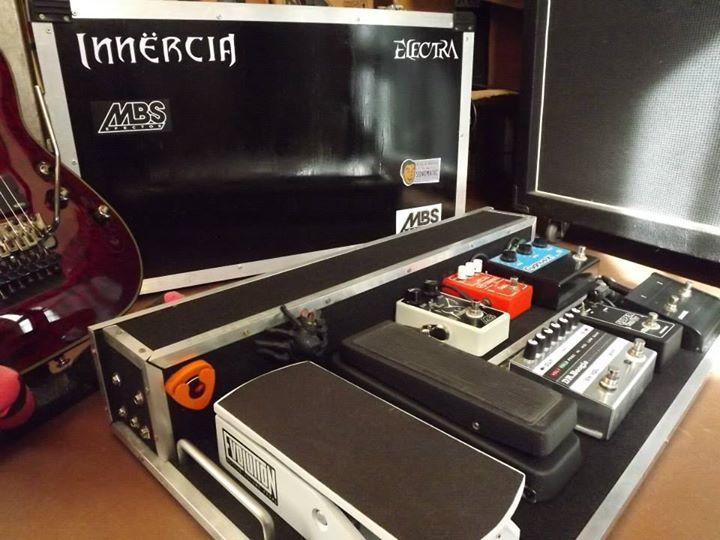
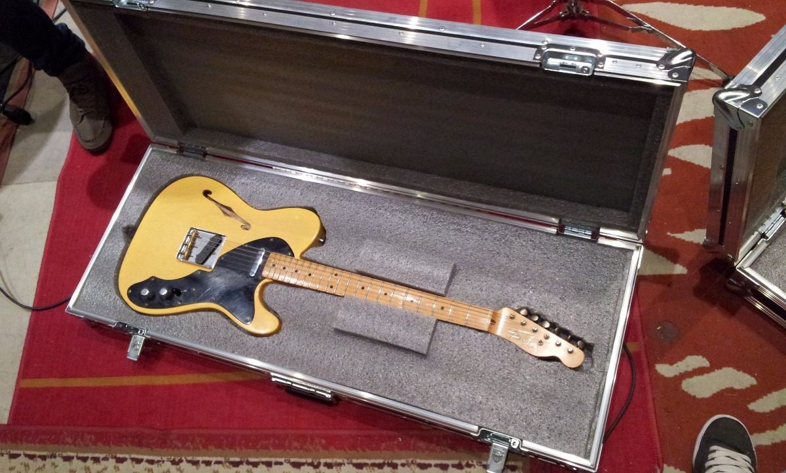
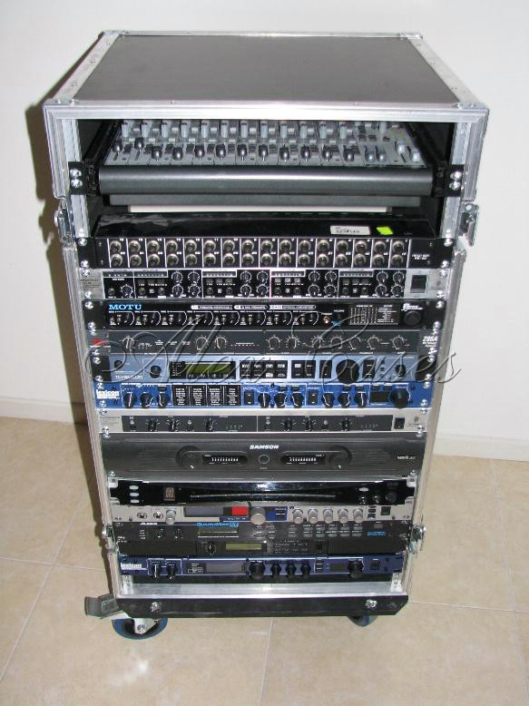

Eagle Cases como empresa fue fundada por musicos ligados a carreras como arquitectura y diseño, que conocen las necesidades del cliente e interpretan la funcionalidad de lo que realizan.
Comenzando con la fabricacion de estuches rigidos para instrumentos musicales y accesorios. La empresa ha desarrollado nuevos productos con el paso del tiempo y estos son: Anvils Profesionales, Correas con sistema fijo Clip-Lock, Pedales de Efectos e Interpedales y Cables.
En materia institucional es miembro de la CAFIM (Camara Argentina de Fabricantes de Instrumentos Musicales) – www.cafim.com.ar – Junto a las principales marcas del pais.
A lo largo de su trayectoria la marca ha expuesto sus productos en Muestra Musica 2013, 2014, 2015 y 2017 – www.muestramusica.com –
Algunos de los artistas que utilizan raptor son: Pablo Mondelo (Massacre), Hernan “Tery” Langer (Carajo), Juan Abalos (Ciro y Los Persas), Karlos Cuadrado (Malon), Gabriel Leopardi (Cirse), Juan Matias (Cruzando el Charco) y bandas como Estelares, Cuentos Borgeanos, Turf, entre otros…
Pedalboards
Las pedalboard "Eagle Cases" pueden fabricarse a medida, nos adaptamos a las dimensiones que nesecites para guardar y proteger tus pedales de efecto o pedalera multiefecto. Su durabilidad proporciona a nuestros clientes la tranquilidad que nesecitan nuestros clientes.

Estuches
Nuestros estuche para instrumentos cuentan con varias protecciones. Por un lado la misma madera del estuche asegura la proteccion contra golpes fuertes que pueda recibir, y por otro su recubrimeinto interno en goma espuma, proporciona inmobilidad al intrumento dentro del estuche
y absorcion de los golpes que pueda recibir.

Rackeras
Nuestros Rackes Tapizados en goma de alto impacto, diseñados para proteger los delicados procesos que esta pueda contener, Aseguran que todo lo que esta adentro quedara intacto en su translado. Podes elegir diferentes modelos de entre 2U hasta 24U (unidades de racks).
